3.3 Gauss’s Law and the Differential Form#
Notebook overview#
Coulomb’s law (§3.1) gives the field of any charge as a sum, and for a complicated distribution that sum is a chore. Gauss’s law is the shortcut that symmetry earns: it relates the flux of the field through a closed surface to the charge inside, and, whenever the geometry is symmetric enough, hands us the field with almost no work. This notebook develops both faces of the law. The integral form is the global bookkeeping statement, true for any surface; the differential form, \(\nabla\cdot\mathbf E = \rho/\varepsilon_0\), ties the field to its source at a single point and is the first field equation of the volume.
We tour the three symmetry classes the law makes tractable, the spherical, cylindrical, and planar, deriving and computing the field of each canonical geometry: the solid sphere, the shell, the line, the sheet, the capacitor, and the slab. Then we give the numerical divergence sketched at the end of §3.1 its full treatment, confirming \(\nabla\cdot\mathbf E = \rho/\varepsilon_0\) pointwise on a grid. Two threads run alongside the physics. The first is that this volume is, in Landau and Lifshitz’s phrase, the classical theory of fields, and \(\nabla\cdot\mathbf E=\rho/\varepsilon_0\) is the first of the local laws it assembles. The second is the gravitational parallel: the very same law governs any inverse-square field, so a mass dropped down a tunnel through the Earth oscillates, and we compute its period.
Everything is in SI units, with \(\varepsilon_0 = 8.854\times10^{-12}\,\)F/m, \(k = 1/4\pi\varepsilon_0 \approx 8.99\times10^9\,\)N·m²/C², and \(G = 6.674\times10^{-11}\,\)N·m²/kg² for the gravitational thread. Electrostatic fields do not move, so every figure here is a faithful static plot: field lines at equal angular spacing, or arrows whose length and colour encode \(|\mathbf E|\).
How to read the checks. Each exercise ends with a
validatecall against an independent fact: a flux equal to \(Q_{\text{enc}}/\varepsilon_0\), an interior field that vanishes, a divergence that equals \(\rho/\varepsilon_0\). A ✓ is strong evidence; a ✗ is a prompt to locate the discrepancy, not a verdict.
Theory in brief#
Electric flux#
The flux of the field through a surface measures how much of it pierces the surface,
with \(d\mathbf A\) the outward area element. For a closed surface \(\Phi\) counts the net number of field lines leaving the volume.
Gauss’s law, integral form#
The flux through any closed surface depends only on the charge it encloses,
independent of the surface’s shape and of every charge outside it. This follows from Coulomb’s \(1/r^2\) and the geometry of solid angle: a point charge sends a fixed flux \(q/\varepsilon_0\) through the full \(4\pi\) of solid angle, and the \(1/r^2\) falloff exactly cancels the \(r^2\) growth of area, so the same flux crosses every surrounding surface (we measured precisely this for a point charge in §3.1).
Using symmetry#
When symmetry fixes the field’s direction and makes its magnitude constant over a well-chosen Gaussian surface, the dot product and the integral in Eq. 166 collapse, and the law alone yields \(E\),
Three symmetry classes make this work: spherical (a sphere as Gaussian surface), cylindrical (a coaxial cylinder), and planar (a pillbox straddling the charge). We develop all three below.
Gauss’s law, differential form#
Shrinking the surface to a point and applying the divergence theorem, \(\oint_S\mathbf E\cdot d\mathbf A=\int_V \nabla\cdot\mathbf E\,dV\), turns the integral law into a local one,
This is the first field equation of the course: a statement, at every point in space, that the divergence of the field is set by the charge density right there. Where charge sits, field lines are born; where space is empty, the field is divergence-free. It is the template for everything that follows.
The field-theory viewpoint#
It is worth naming what we are doing. Landau and Lifshitz call this entire subject the classical theory of fields, and electrodynamics is its forerunning and richest example: a physics not of particles and forces-at-a-distance but of a field that fills space and obeys local equations. Equation Eq. 168 is the first of those local laws. The volume assembles the rest one at a time until they close into Maxwell’s equations (§3.8), and the relativistic capstone (§3.12) shows that the electric and magnetic fields are a single object seen from different frames. Reading \(\nabla\cdot\mathbf E=\rho/\varepsilon_0\) as “the first field equation,” rather than “a tidy way to find \(E\),” is the shift of viewpoint this volume is built around.
The gravitational parallel#
Gauss’s law needs only the inverse-square form, so gravity obeys it too. With the gravitational field \(\mathbf g\) playing the role of \(\mathbf E\) and mass density \(\rho_m\) the role of charge,
the same structure, with \(-4\pi G\) in place of \(1/\varepsilon_0\). The sign is the honest difference: gravity only attracts, so \(\mathbf g\) points toward mass. The field equation is identical, but the phenomenology is not. There is no negative mass, so there is no gravitational “shielding” and no gravitational conductor; the tricks that work for charges on a conductor have no gravitational twin. What does transfer exactly is everything that followed from spherical symmetry, the shell theorem and the \(g\propto r\) interior of a uniform sphere, which we use in Exercise 8 to drop a mass through the Earth.
Setup#
import numpy as np
import matplotlib.pyplot as plt
from scipy.integrate import solve_ivp
from ecp import draw, validate
# SI constants, shared across Volume III.
from scipy.constants import epsilon_0 as EPS0 # vacuum permittivity, F/m
K = 1.0 / (4.0 * np.pi * EPS0) # Coulomb constant ≈ 8.99e9 N·m²/C²
NANO = 1e-9 # 1 nC or 1 nC/m, etc.
from scipy.constants import G as G_GRAV # gravitational constant, N·m²/kg²
POS, NEG = "#c1121f", "#16213e" # positive charge red, negative dark blue
def E_point_3d(q, r0, P):
"""Field of a point charge at arbitrary 3-D field points.
The full 3-D Coulomb field k·q·r̂/r^2, used to integrate flux over a
surface.
Parameters
----------
q : float
Charge in coulombs.
r0 : array_like
Source position ``(x, y, z)``.
P : numpy.ndarray
Field points of shape ``(..., 3)``.
Returns
-------
numpy.ndarray
The field vectors at ``P``, same leading shape, in V/m.
"""
d = P - np.asarray(r0, float)
r = np.linalg.norm(d, axis=-1)
with np.errstate(divide="ignore", invalid="ignore"):
return K * q * d / r[..., None] ** 3
def flux_through_sphere(charges, Rs, center=(0.0, 0.0, 0.0), n=200):
"""Numerical electric flux through a sphere.
Integrates the closed-surface integral of E·dA with `numpy.trapezoid` on a
(θ, φ) grid; by Gauss's law it equals Q_enc/ε0.
Parameters
----------
charges : list of tuple
Each ``(q, r0)``: a charge and its 3-D position.
Rs : float
Sphere radius.
center : tuple of float, optional
Sphere centre (default origin).
n : int, optional
Grid resolution per angle (default 200).
Returns
-------
float
The total flux through the sphere, in V·m.
"""
c = np.asarray(center, float)
th = np.linspace(0.0, np.pi, n)
ph = np.linspace(0.0, 2.0 * np.pi, n)
TH, PH = np.meshgrid(th, ph, indexing="ij")
nhat = np.stack(
[np.sin(TH) * np.cos(PH), np.sin(TH) * np.sin(PH), np.cos(TH)], axis=-1
)
P = c + Rs * nhat
E = np.zeros_like(P)
for q, r0 in charges:
E = E + E_point_3d(q, r0, P)
En = np.sum(E * nhat, axis=-1) # E · n̂
integrand = En * Rs**2 * np.sin(TH) # E·n̂ dA/(dθ dφ)
return np.trapezoid(np.trapezoid(integrand, ph, axis=1), th)
def flux_through_cube(q, L, n=200):
"""Numerical electric flux through a cube about a central charge.
Sums E·dA over the six faces; should also equal q/ε0, independent of
surface shape.
Parameters
----------
q : float
Charge at the origin, in coulombs.
L : float
Cube half-side.
n : int, optional
Samples per face edge (default 200).
Returns
-------
float
The total flux through the cube, in V·m.
"""
s = np.linspace(-L, L, n)
Y, Z = np.meshgrid(s, s, indexing="ij")
P = np.stack([np.full_like(Y, L), Y, Z], axis=-1)
En = E_point_3d(q, (0.0, 0.0, 0.0), P)[..., 0] # E · x̂ on the +x face
face = np.trapezoid(np.trapezoid(En, s, axis=1), s)
return 6.0 * face
def radial_quiver_data(Emag_of_r, xs):
"""Build quiver arrays for a planar radial field of given magnitude.
Turns a radial magnitude profile E(r) into (X, Y, U, V) with E pointing
radially, for a faithful field map.
Parameters
----------
Emag_of_r : callable
Function ``r -> |E|(r)``.
xs : numpy.ndarray
1-D coordinate samples shared by both axes.
Returns
-------
X, Y, U, V : numpy.ndarray
Meshgrid coordinates and the radial field components on them.
"""
X, Y = np.meshgrid(xs, xs)
r = np.hypot(X, Y)
with np.errstate(divide="ignore", invalid="ignore"):
mag = Emag_of_r(r)
U = np.where(r > 0, mag * X / r, 0.0)
V = np.where(r > 0, mag * Y / r, 0.0)
return X, Y, np.nan_to_num(U), np.nan_to_num(V)
Exercise 1 — Flux and Gauss’s law#
The whole law is contained in one claim about flux: the number of field lines
leaving a closed surface depends only on the charge inside, never on the surface’s
shape (Eq. 165, Eq. 166). The cleanest way to believe it is to
integrate the flux over genuinely different surfaces and watch the same answer
appear. The surface integral is evaluated with numpy.trapezoid: over the
polar and azimuthal angles for a sphere, and over the two face coordinates
for a cube (Fig. 183).
This exercise. Place \(q = 1\,\)nC at the origin.
Compute \(\oint\mathbf E\cdot d\mathbf A\) numerically with
numpy.trapezoidthrough three concentric spheres of radius \(R = 0.05, 0.1, 0.2\,\)m.Repeat through a cube of half-side \(0.1\,\)m centred on the charge.
All four must return \(q/\varepsilon_0\), independent of the surface’s size and shape.
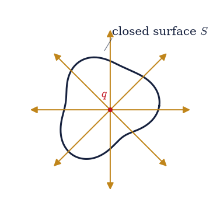
Fig. 183 Gauss’s law: a charge \(q\) inside an arbitrary closed surface \(S\) (here an irregular blob). The amber arrows are the field piercing the surface; the net flux \(\oint\mathbf E\cdot d\mathbf A\) counts the field lines leaving and equals \(q/\varepsilon_0\) no matter the surface’s shape or size.#
q/ε₀ = 112.9409 V·m
sphere R=0.05 m: flux/(q/ε₀) = 0.99998
sphere R=0.10 m: flux/(q/ε₀) = 0.99998
sphere R=0.20 m: flux/(q/ε₀) = 0.99998
cube L=0.10 m: flux/(q/ε₀) = 0.99999
Validation 1#
✓ the flux through a sphere equals q/ε₀ [got 0.999979 vs expected 1 (rtol=0.01)]
✓ the flux equals q/ε₀ regardless of surface shape or size [got 0.999988 vs expected 1 (rtol=0.01)]
True
Exercise 2 — The uniformly charged solid sphere (spherical class)#
The first symmetry class is spherical. For a uniformly charged ball, the field must be radial and depend only on \(r\), so a concentric sphere is the natural Gaussian surface and Eq. 167 gives \(E\) immediately. Inside, the enclosed charge grows as \(r^3\) while the surface area grows as \(r^2\), so the field rises linearly; outside, the full charge is enclosed and the field falls as a point charge’s (Fig. 184):
This exercise. Take \(R = 0.1\,\)m and \(Q = 1\,\)nC spread uniformly.
Evaluate the closed-form \(E(r)\) over the radial grid (the two branches joined with
numpy.whereat \(r=R\)).Confirm the interior is \(\propto r\) and the exterior is \(\propto 1/r^2\) from the field ratios, and check continuity at \(r=R\) by comparing the inside and outside limits (the field is continuous, with a kink in slope).
Visualise \(E(r)\) and a faithful field map (Fig. 185, Fig. 186).
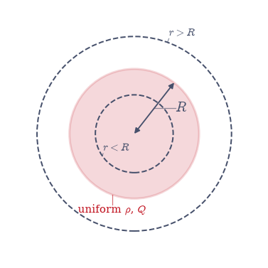
Fig. 184 The spherical Gaussian-surface construction for a uniformly charged ball of radius \(R\) and charge \(Q\) (shaded). A concentric Gaussian sphere drawn at \(r<R\) encloses only the fraction of charge within it (\(\propto r^3\)); one drawn at \(r>R\) encloses all of \(Q\). Symmetry makes \(\mathbf E\) radial and constant on each, so Gauss’s law gives \(E(r)\) directly.#
interior E(0.05)/E(0.02) = 2.5000 (expect 2.5)
exterior E(0.2)/E(0.4) = 4.0000 (expect 4)
continuity gap at r=R = 8.988e-07 V/m
/tmp/ipykernel_3097/1968301667.py:21: RuntimeWarning: divide by zero encountered in divide
return np.where(r < R_s, K * Q_s * r / R_s**3, K * Q_s / r**2)
findfont: Failed to find font weight 600, now using 700.
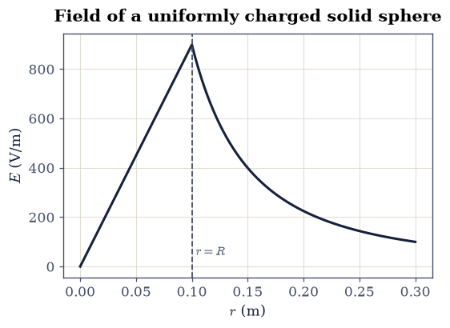
Fig. 185 The field of the uniformly charged solid sphere (\(R=0.1\,\)m, \(Q=1\,\)nC). Inside it rises linearly, \(E\propto r\) (enclosed charge \(\propto r^3\) beats area \(\propto r^2\)); outside it falls as \(1/r^2\), exactly a point charge of the full \(Q\). The two branches meet continuously at \(r=R\) (dashed), with only a kink in slope.#
findfont: Failed to find font weight 600, now using 700.
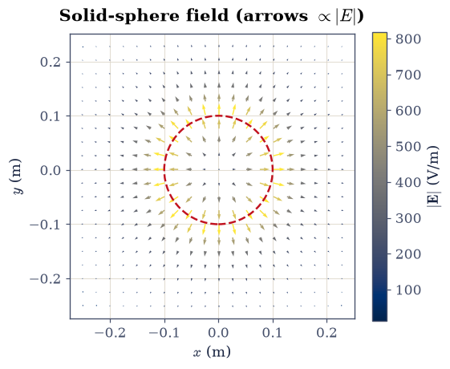
Fig. 186 Faithful field map of the solid sphere in a plane through its centre (ecp.draw.field_quiver): each arrow’s length and colour encode \(|\mathbf E|\). The arrows lengthen with \(r\) inside the sphere (dashed circle) and shorten outside it, the visual signature of the \(\propto r\) then \(\propto 1/r^2\) profile.#
Validation 2#
✓ the interior field is ∝ r [got 2.5 vs expected 2.5 (rtol=0.001)]
✓ the exterior field is ∝ 1/r² [got 4 vs expected 4 (rtol=0.001)]
✓ the field is continuous at the surface r=R [got 8.98755e-07 vs expected 0 (rtol=1e-06)]
True
Exercise 3 — The spherical shell and the shell theorem#
A surface charge spread over a sphere produces no field at all inside it. Gauss’s law makes this almost obvious: any Gaussian sphere with \(r<R\) encloses zero charge, so its flux, and by symmetry the field, vanishes. Outside, the full charge is enclosed and the shell looks exactly like a point charge at its centre (Fig. 187). This is the electrostatic shell theorem, the twin of the gravitational one Newton needed for the Earth.
This exercise. Take a shell of radius \(R = 0.1\,\)m carrying \(Q = 1\,\)nC.
From Gauss’s law the interior field is exactly zero and the exterior is \(kQ/r^2\); confirm both from the closed-form field (a
numpy.wheresplit at \(r=R\)).As an independent numerical check, approximate the shell by \(N=2000\) equal point charges on a Fibonacci-lattice sphere and superpose their fields (the point-charge superposition of §3.1): the interior field collapses to a tiny residual while the exterior matches \(kQ/r^2\).
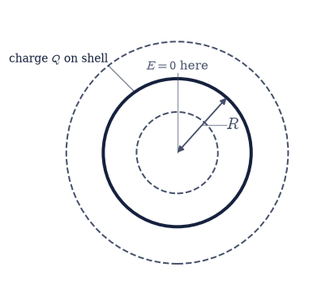
Fig. 187 The spherical shell (radius \(R\), charge \(Q\) on the surface, thick circle) with two Gaussian spheres: one inside (\(r<R\), enclosing no charge, so \(E=0\)) and one outside (\(r>R\), enclosing all of \(Q\), so \(E=kQ/r^2\)). The vanishing interior field is the shell theorem.#
analytic interior field = 0.000e+00 V/m
discrete interior |E| = 3.457e-03 V/m (3.85e-06 of surface field)
discrete exterior |E| = 1.4380e+02 V/m (expect 1.4380e+02)
Validation 3#
✓ the field vanishes inside a spherical shell (shell theorem) [got 0 vs expected 0 (rtol=1e-06)]
✓ the superposed shell's interior field is negligible vs its surface field [got 3.84674e-06 vs expected 0 (rtol=1e-06)]
✓ outside, the shell acts as a point charge kQ/r² [got 143.8 vs expected 143.801 (rtol=0.01)]
True
Exercise 4 — The infinite line charge (cylindrical class)#
The second class is cylindrical. A uniformly charged infinite line has a field that points radially outward (in the plane perpendicular to the line) and depends only on the perpendicular distance \(r\), so the Gaussian surface is a coaxial cylinder (Fig. 188). Its curved wall has area \(2\pi r L\) and the flat caps contribute nothing, so Eq. 167 gives
The falloff is \(1/r\), slower than a point charge’s \(1/r^2\): a line reaches farther because its charge is spread along a whole dimension.
This exercise. Take \(\lambda = 1\,\)nC/m.
Evaluate \(E=\lambda/(2\pi\varepsilon_0 r)\) over the radial grid and confirm the \(1/r\) falloff from the ratio \(E(0.1)/E(0.2)\).
Draw a faithful map of the radial field in the plane perpendicular to the line (Fig. 189).
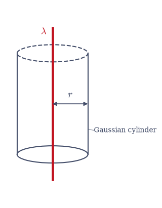
Fig. 188 The cylindrical Gaussian surface for an infinite line charge of density \(\lambda\) (vertical, red): a coaxial cylinder of radius \(r\) and length \(L\). The field is radial and constant on the curved wall (area \(2\pi r L\)) and parallel to the flat caps (zero flux there), so Gauss’s law gives \(E=\lambda/2\pi\varepsilon_0 r\).#
line-charge E(0.1)/E(0.2) = 2.0000 (expect 2 for 1/r)
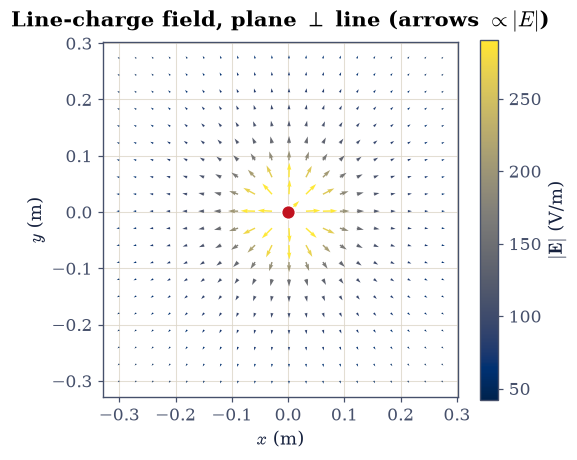
Fig. 189 Faithful field map of the infinite line charge in the plane perpendicular to it (ecp.draw.field_quiver): arrow length and colour encode \(|\mathbf E|\propto 1/r\). The arrows point radially outward and shrink with distance, but more gently than a point charge’s \(1/r^2\).#
Validation 4#
✓ the line-charge field falls as 1/r [got 2 vs expected 2 (rtol=0.001)]
True
Exercise 5 — The infinite sheet and the parallel-plate capacitor (planar class)#
The third class is planar. An infinite sheet of charge has a field that points straight away from it and, remarkably, does not weaken with distance. A pillbox Gaussian surface straddling the sheet (Fig. 190) catches flux \(EA\) through each of its two faces and encloses charge \(\sigma A\), so
independent of distance. That a field can be perfectly uniform is genuinely surprising on first sight; it is the planar geometry’s answer to the \(1/r^2\) and \(1/r\) of the other classes. Two oppositely charged sheets then superpose: their fields add to \(\sigma/\varepsilon_0\) in the gap and cancel to zero outside, which is the ideal parallel-plate capacitor.
This exercise. Take \(\sigma = 1\,\)nC/m².
Confirm the uniformity by measurement, not by restating the formula: evaluate the on-axis field of a large finite disk (radius \(10\,\)m, far larger than the distances probed) at \(z = 0.01\) and \(0.02\,\)m via the closed form \(E(z)=\sigma/2\varepsilon_0\,(1-z/\sqrt{z^2+R^2})\), and show the two values agree with each other and with the infinite-sheet \(\sigma/2\varepsilon_0\).
Obtain the two-sheet capacitor field by superposing the oppositely charged sheets (
numpy.wherefor the between/outside regions), and confirm \(\sigma/\varepsilon_0\) between the plates and zero outside (Fig. 191).
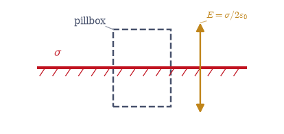
Fig. 190 The pillbox Gaussian surface for an infinite charged sheet (density \(\sigma\), horizontal). The box straddles the sheet; flux leaves through its two faces (area \(A\) each) and the field is uniform on both, while the side walls catch none. Gauss’s law gives the distance-independent \(E=\sigma/2\varepsilon_0\), drawn as equal arrows above and below.#
disk (R=10 m) E at z=0.01, 0.02 m: 56.4140, 56.3575 V/m (ratio 1.001002; infinite sheet 56.4705 V/m)
capacitor: between = 112.9409 V/m (= σ/ε₀ = 112.9409), outside = 0.0000 V/m
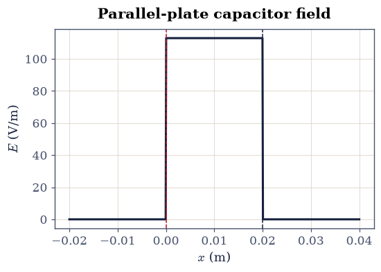
Fig. 191 The parallel-plate capacitor field across \(x\) for sheets \(+\sigma\) at \(x=0\) and \(-\sigma\) at \(x=d\) (dashed). The two uniform single-sheet fields superpose to a constant \(\sigma/\varepsilon_0\) in the gap and cancel to zero outside, the textbook capacitor.#
Validation 5#
✓ a large sheet's near field is uniform: measured on a 10 m disk at two distances [got 1.001 vs expected 1 (rtol=0.01)]
✓ and it matches the infinite-sheet value σ/2ε₀ [got 56.414 vs expected 56.4705 (rtol=0.005)]
✓ two opposite sheets give σ/ε₀ between them [got 112.941 vs expected 112.941 (rtol=1e-09)]
✓ the capacitor field is zero outside the plates [got 0 vs expected 0 (rtol=1e-06)]
True
Exercise 6 — The charged slab#
A slab of finite thickness combines the planar symmetry with interior structure: inside, only the charge between the centre plane and the field point is enclosed, so the field grows linearly; outside, the whole column is enclosed and the field saturates, just like an infinite sheet (Fig. 192). For a slab of half-thickness \(a\) and uniform density \(\rho\), a pillbox argument gives
This exercise (student). Take \(\rho = 10^{-6}\,\)C/m³ and \(a = 0.05\,\)m.
Using Gauss’s law with a pillbox straddling the mid-plane, write \(E(x)\) for \(|x|<a\) and \(|x|>a\) and evaluate it over the grid with
numpy.wherefor the inside/outside branches.Confirm the interior grows \(\propto x\) and the exterior saturates at the constant \(\rho a/\varepsilon_0\), and plot the ramp-then-plateau profile (Fig. 193).
/tmp/ipykernel_3097/2471179576.py:15: UserWarning: linestyle is redundantly defined by the 'linestyle' keyword argument and the fmt string "-" (-> linestyle='-'). The keyword argument will take precedence.
ax.plot([0, 0], [-1.2, 1.2], "-", color=draw.SOFT, lw=1.0, ls=":")
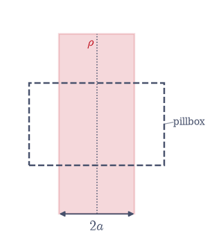
Fig. 192 The charged slab of half-thickness \(a\) and uniform density \(\rho\) (shaded band), with a pillbox straddling the mid-plane \(x=0\). The enclosed charge grows with the pillbox half-width while it lies inside the slab and then stops growing once the box pokes out, giving \(E\propto x\) inside and a constant \(\rho a/\varepsilon_0\) outside.#
interior E(a/2)/E(a/4) = 2.0000 (expect 2)
exterior E = 5647.0453 V/m (expect ρa/ε₀ = 5647.0453)
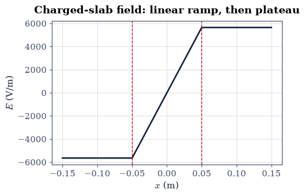
Fig. 193 The slab field \(E(x)\) across the slab (\(\rho=10^{-6}\,\)C/m³, \(a=0.05\,\)m; slab edges dashed). The field ramps linearly through the interior, \(E\propto x\), then saturates at the constant \(\rho a/\varepsilon_0\) once outside, where the slab looks like a sheet of surface density \(\sigma=2\rho a\).#
Validation 6#
✓ the slab field grows linearly inside (∝ x) [got 2 vs expected 2 (rtol=0.001)]
✓ the slab field saturates outside at ρa/ε₀ [got 5647.05 vs expected 5647.05 (rtol=0.001)]
True
Exercise 7 — The differential form: ∇·E = ρ/ε₀ numerically#
Shrinking Gauss’s law to a point gives the local field equation
Eq. 168, \(\nabla\cdot\mathbf E = \rho/\varepsilon_0\). We can read it
off a grid directly: the divergence is a sum of central differences of the field
components, the same stencils as
§0.3, evaluated here with
numpy.gradient (Fig. 194). For the uniformly charged
sphere of Exercise 2 the interior field is \(\mathbf E=(kQ/R^3)\,\mathbf r\), whose
divergence is the constant \(3kQ/R^3=\rho/\varepsilon_0\); outside, the field is
source-free.
This exercise. Build the solid-sphere field of Exercise 2 (\(R=0.1\,\)m, \(Q=1\,\)nC) on an \(81^3\) grid over \([-0.2, 0.2]^3\,\)m.
Compute \(\nabla\cdot\mathbf E = \partial_x E_x + \partial_y E_y + \partial_z E_z\) with
numpy.gradient.Confirm it equals \(\rho/\varepsilon_0\) in the interior (well inside, away from the surface kink) and is \(\approx 0\) in the empty space outside.
This local statement, field tied to source at every point, is the first field equation of the course. It is the sense in which electrodynamics, in Landau and Lifshitz’s framing, is the exemplar of a classical field theory: the physics lives in differential equations the field obeys everywhere, not in forces between distant particles.
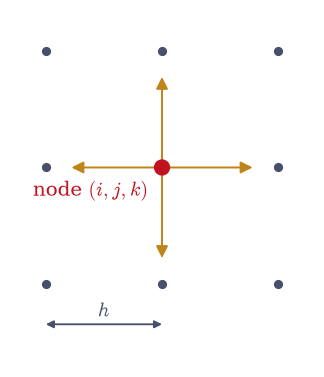
Fig. 194 The central-difference stencil behind the numerical divergence: at a grid node (red), each component’s derivative is formed from its two neighbours a step \(h\) apart along that axis (here the in-plane \(x\) and \(y\) neighbours of the \(81^3\) grid). Summing \(\partial_x E_x+\partial_y E_y+\partial_z E_z\) at every node gives \(\nabla\cdot\mathbf E\).#
⟨∇·E⟩ inside / (ρ/ε₀) = 1.00000 (expect 1)
max|∇·E| outside / (ρ/ε₀) = 1.55e-03 (expect ≈ 0)
Validation 7#
✓ ∇·E = ρ/ε₀ inside the charged sphere (the differential field equation) [got 1 vs expected 1 (rtol=0.01)]
✓ the field is divergence-free in empty space
True
Exercise 8 — The gravitational parallel: through the Earth#
Because Gauss’s law needs only the inverse-square form, the spherical results transfer to gravity unchanged. Model the Earth as a uniform sphere of mass \(M\) and radius \(R\). By the gravitational Gauss law Eq. 169 (the field points inward, the honest sign of attraction; there is no negative mass and so no shielding), the field inside grows linearly, \(g(r) = GM\,r/R^3\), exactly mirroring the charged sphere of Exercise 2 (Fig. 195). A mass dropped into a tunnel through the centre therefore feels a restoring force \(\propto -r\), the signature of simple harmonic motion.
This exercise (student). Take a uniform Earth with \(M = 5.972\times10^{24}\,\)kg, \(R = 6.371\times10^{6}\,\)m, and \(G = 6.674\times10^{-11}\,\)N·m²/kg². Release a mass from rest at the surface inside a frictionless tunnel through the centre.
Integrate its motion with
scipy.integrate.solve_ivp(DOP853, with a zero-crossing event to time the swing), measure the oscillation period, and compare it to the SHM prediction \(T = 2\pi\sqrt{R^3/GM}\).Note the small delight that this equals the period of a surface-skimming orbit (both are \(2\pi\sqrt{R^3/GM}\)), a callback to the orbital periods of §1.4 and §2.4.
Plot \(g(r)\) inside and outside the Earth (Fig. 196).
/tmp/ipykernel_3097/2511264104.py:10: UserWarning: linestyle is redundantly defined by the 'linestyle' keyword argument and the fmt string "-" (-> linestyle='-'). The keyword argument will take precedence.
ax.plot([0, 0], [-1.0, 1.0], "-", color=draw.SOFT, lw=1.0, ls=":")
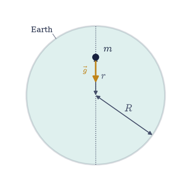
Fig. 195 The through-the-Earth problem: a uniform Earth of radius \(R\) (shaded) with a frictionless tunnel through the centre (dotted). A mass \(m\) at radius \(r\) feels the gravity of only the enclosed sphere, \(g(r)=GM r/R^3\), pointing inward (amber). The linear restoring field makes the motion simple harmonic.#
measured period = 5060.91 s = 84.3 min
SHM prediction = 5060.91 s = 84.3 min
(equals the surface-orbit period 2π√(R³/GM) — same √(R³/GM))
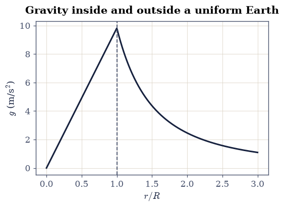
Fig. 196 The gravitational field strength \(g(r)\) for a uniform Earth (surface dashed). Inside it rises linearly, \(g=GM r/R^3\) (the source of the simple-harmonic tunnel motion); outside it falls as \(GM/r^2\). This is the exact gravitational mirror of the charged solid sphere in Fig. 185.#
Validation 8#
✓ the through-Earth oscillation is SHM with period 2π√(R³/GM) [got 5060.91 vs expected 5060.91 (rtol=0.001)]
True
Exercise 9 — When Gauss’s law is, and isn’t, enough#
Gauss’s law is always true, but it only gives the field when symmetry pins the field’s direction and magnitude on a Gaussian surface. Drop the symmetry and the law still holds as a bookkeeping identity, the flux still equals \(Q_{\text{enc}}/\varepsilon_0\), but it can no longer be inverted for \(\mathbf E\): one scalar equation cannot determine a vector field that varies over the surface (Fig. 197). That is exactly the situation that forces us to solve Poisson’s equation directly, the boundary-value problem of §3.4.
This exercise. Place two unequal charges, \(q_1 = 1\,\)nC at \((-0.1, 0, 0)\) and \(q_2 = 3\,\)nC at \((0.15, 0, 0)\,\)m. The distribution has no symmetry that fixes the field, yet the flux through any enclosing surface must still be \((q_1+q_2)/\varepsilon_0\).
Verify this numerically with
numpy.trapezoidover the sphere’s \((\theta,\varphi)\) (the flux integral of Exercise 1) on a sphere of radius \(0.5\,\)m enclosing both.Note that the same calculation gives us no way to read off \(\mathbf E\) pointwise — the gateway to §3.4.
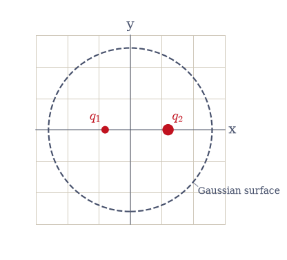
Fig. 197 An asymmetric pair: unequal charges \(q_1\) and \(q_2\) enclosed by a Gaussian sphere (dashed). Gauss’s law still fixes the total flux at \((q_1+q_2)/\varepsilon_0\), but with no symmetry to make \(\mathbf E\) constant on the surface it cannot be solved for the field, which is what motivates Poisson’s equation in §3.4.#
flux/(Q_enc/ε₀) for the asymmetric pair = 0.99998 (expect 1)
Validation 9#
✓ Gauss's law holds even when it cannot give the field by symmetry alone [got 0.999981 vs expected 1 (rtol=0.01)]
True
Notebook summary#
Flux \(\oint\mathbf E\cdot d\mathbf A=q/\varepsilon_0\) for any enclosing surface (sphere and cube agreeing to \(\sim10^{-4}\)), independent of shape or size.
The three symmetry classes solved from Gauss’s law: the uniformly charged ball (\(E\propto r\) inside, \(1/r^2\) outside, continuous at \(R\)), the shell (zero interior field, the shell theorem), the infinite line (\(E\propto1/r\)), the sheet and capacitor (\(E\) constant), and the slab (\(E\propto x\) inside).
The differential form \(\nabla\cdot\mathbf E=\rho/\varepsilon_0\) confirmed numerically (
numpy.gradientdivergence); the gravitational parallel (simple-harmonic fall through the Earth); and where symmetry fails, motivating Poisson’s equation in §3.4.
Outlook#
Conductors and Gauss’s law. Just outside a conductor the field is \(\sigma/\varepsilon_0\) (a pillbox with one face inside, where \(\mathbf E=0\)), all excess charge lives on the outer surface, and a hollow conductor shields its interior, the Faraday cage. These follow directly from the law and set up the boundary-value problems of §3.4.
The gravitational shell theorem. Newton needed exactly the result of Exercise 3 to treat the Earth and Moon as point masses; the gradient of \(g\) across a body is the tidal field.
Why \(1/r^2\) exactly. Gauss’s law is the statement that field lines are conserved in three dimensions; the \(1/r^2\) is nothing but the \(r^2\) surface area of a sphere. In \(d\) dimensions the law would give \(E\propto 1/r^{\,d-1}\), a clean way to see what is special about living in three.
Forward links. Poisson’s equation and the boundary-value problem (§3.4); the full set of field equations (Maxwell, §3.8); and the covariant field-equation viewpoint of the relativistic capstone (§3.12), where \(\nabla\cdot\mathbf E=\rho/ \varepsilon_0\) becomes one component of a single four-dimensional law.
References#
David J. Griffiths. Introduction to Electrodynamics. Cambridge University Press, 4 edition, 2017.
L. D. Landau and E. M. Lifshitz. The Classical Theory of Fields. Volume 2 of Course of Theoretical Physics. Butterworth-Heinemann, 4 edition, 1980.
Wolfgang Nolting. Theoretical Physics 3: Electrodynamics. Springer, 2016.